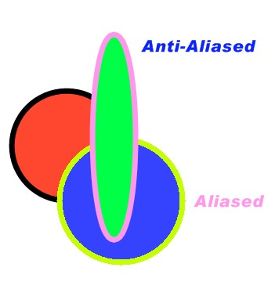
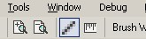

Aliasing / Anti-Aliasing Toggle
|  |
The Aliased attribute of the
various Tools
and Text
can be easily set through the toolbar. Aliasing / Anti-Aliasing determines
whether or not there are "jaggies" when you draw on the canvas. Jaggies
are simply just sharp edges on lines, and when you remove those sharp edges
with shading, it is considered to be Anti-Aliased.
In lower right hand corner picture, the Anti-Aliasing attribute is turned on. So, any tool or text will appear without jaggies.
|
| Also notice in the picture above the difference between Aliased and Anti-Aliased drawing. The Anti-Aliased circles appear to be significantly more smooth then the one Aliased circle. |  |